Sixteen frames captured from the actual film, in time order — no plan frames, nothing composed. Every element in every frame was checked where it stands; anything misplaced was adjusted and captured again. Tap NEXT › to walk the opening.
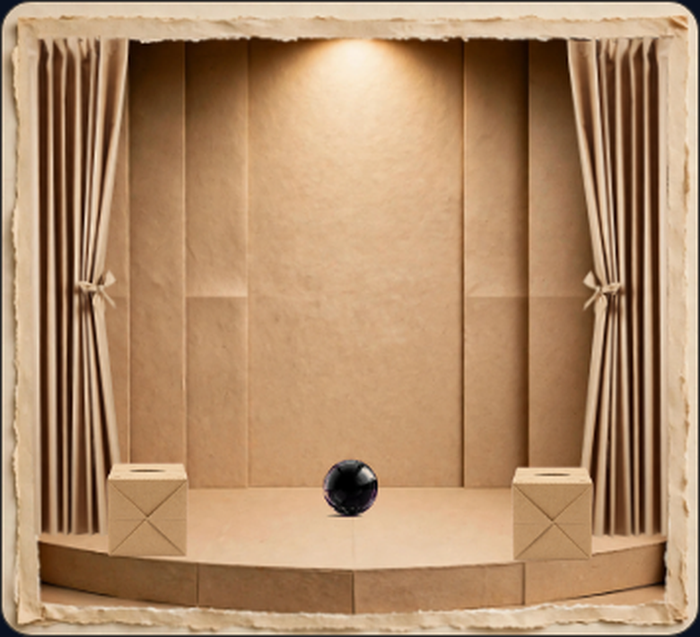
0.00 s — THE STAGE BEFORE EVERYTHING. Both boxes stand on the platform, bases on the surface. The black ball rests at the centre. Nothing has happened yet.
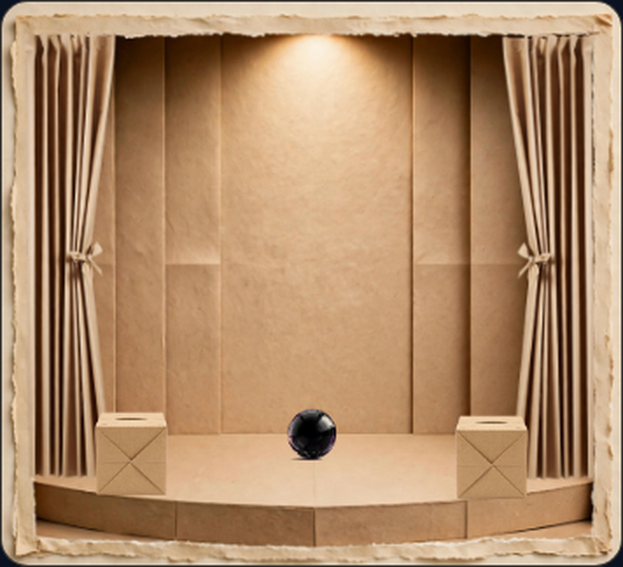
0.30 s — THE STILL STAGE. Nothing has moved. Boxes and ball grounded on the platform.
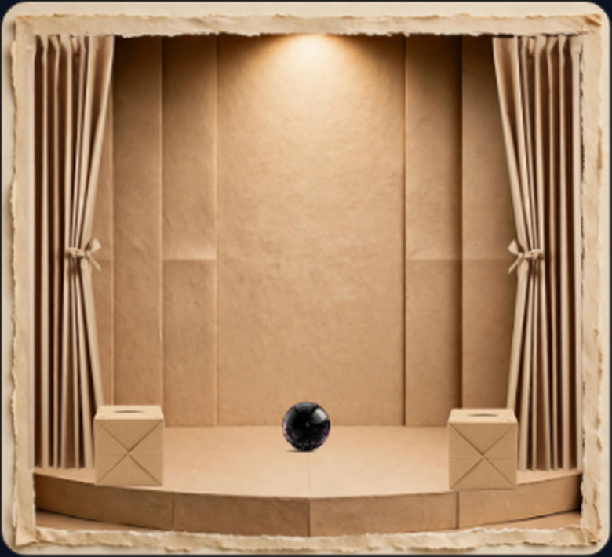
0.45 s — THE HELD BREATH. The burst is a fraction of a second away. Everything still seated.
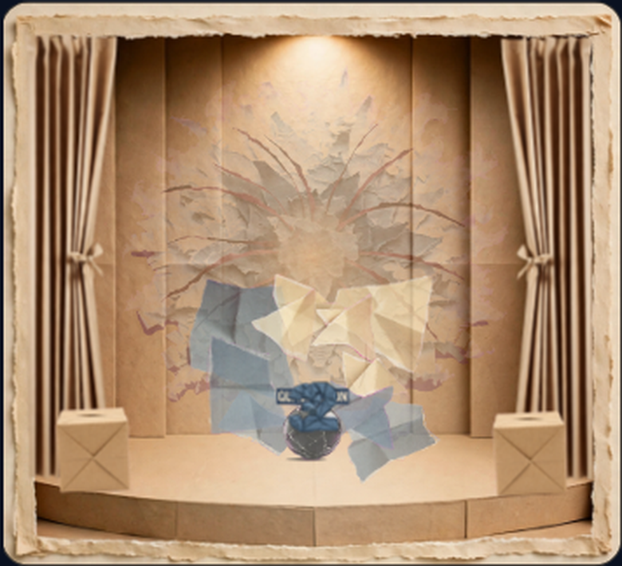
0.60 s — THE BURST. The ball explodes where it sat on the platform. The claim is born from this point.
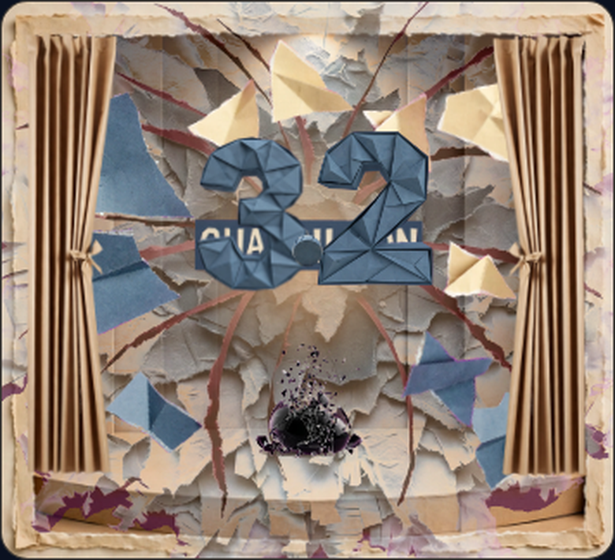
0.85 s — THE EXPLOSION AT FULL BLOOM. Smoke and shards fill the stage; the digits are emerging at the centre. The boxes have been thrown clear, as designed.
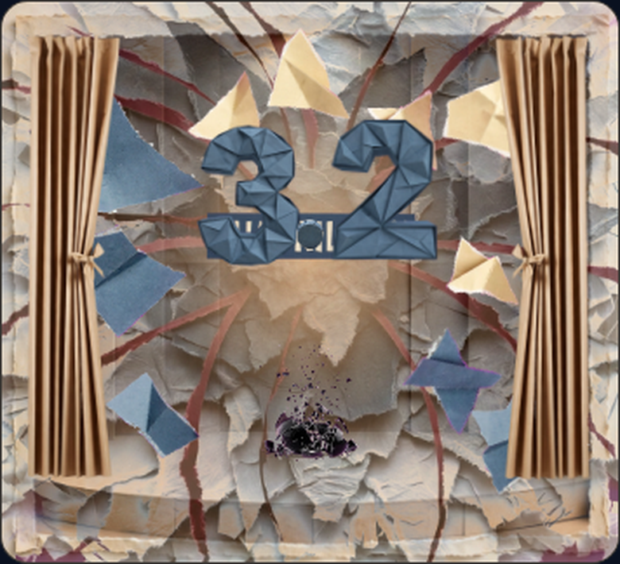
1.10 s — THE CLAIM EMERGES. The digits stand at the centre while the burst resolves around them. Every shard stays inside the frame — the re-aim cured the one that used to cross the left edge here (D4, closed: the fan now pours from the burst point itself, beneath the standing claim).
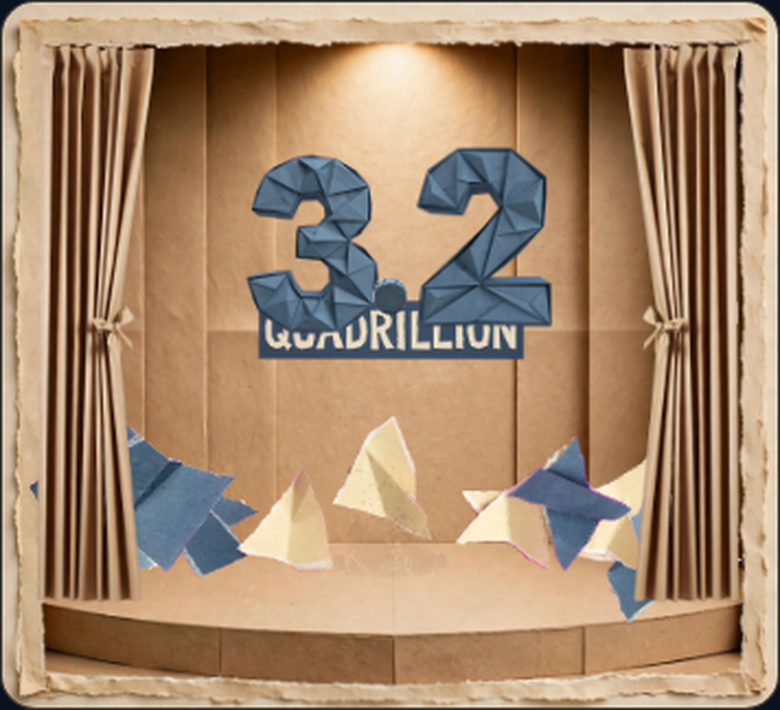
1.45 s — THE CLAIM STANDING. “3.2 QUADRILLION” complete, centre stage. This frame replaces the old “empty instant” — the stage was never empty at 1.45 s; the claim stands here.
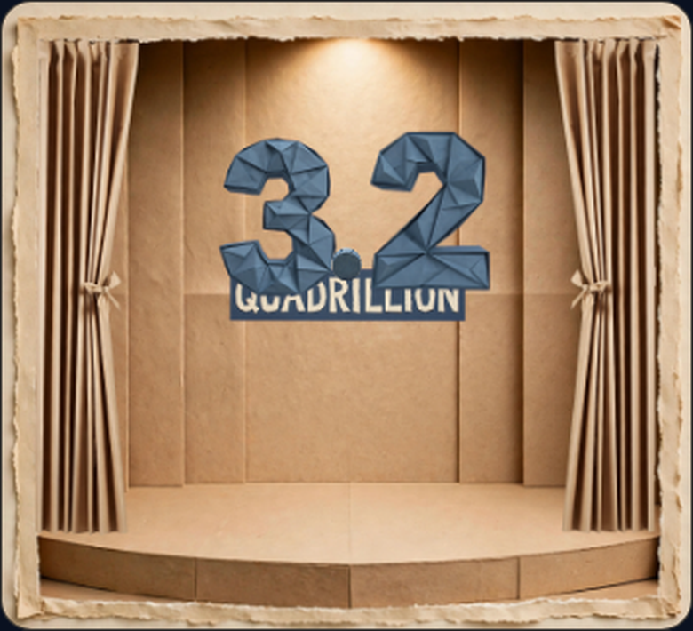
1.80 s — THE CLAIM AT REST. The burst is gone. The claim stands alone on a clear stage.
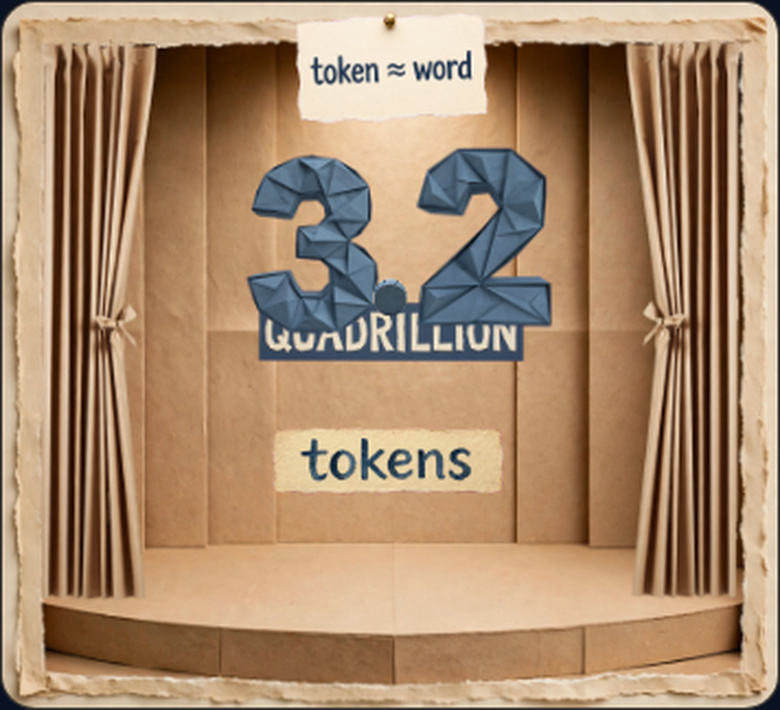
2.10 s — THE TOKENS PLAQUE. The word “tokens” hangs under the claim, and the “token ≈ word” sign is pinned on the wall above — signage, fixed to the set.
2.45 s — THE STAMP AT ITS WORD. As “processed” is spoken, the stamp presses the red seal onto the platform. One act, at its own moment only — it does not appear at any other time.
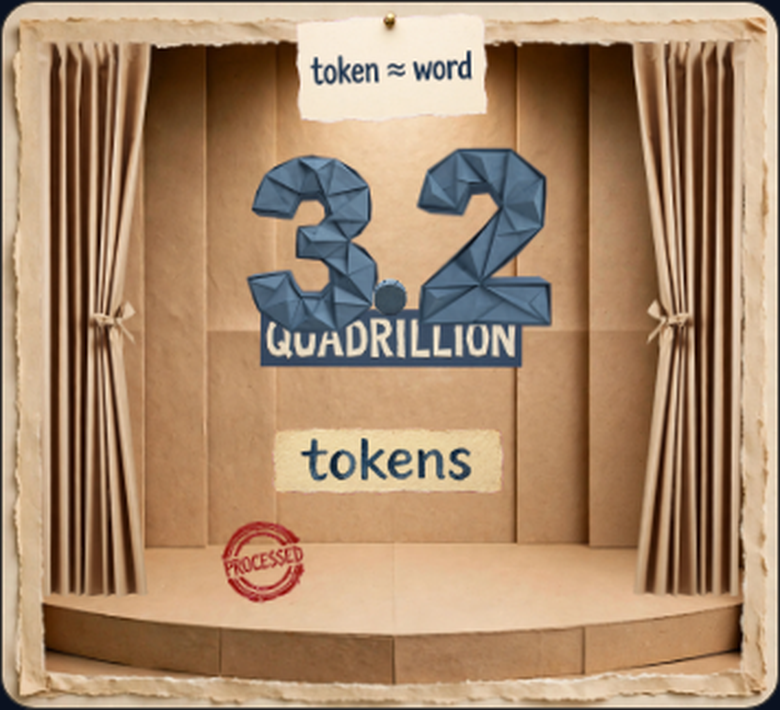
2.80 s — PROCESSED. The red seal stands on the platform. The stamp is gone; its act is finished.
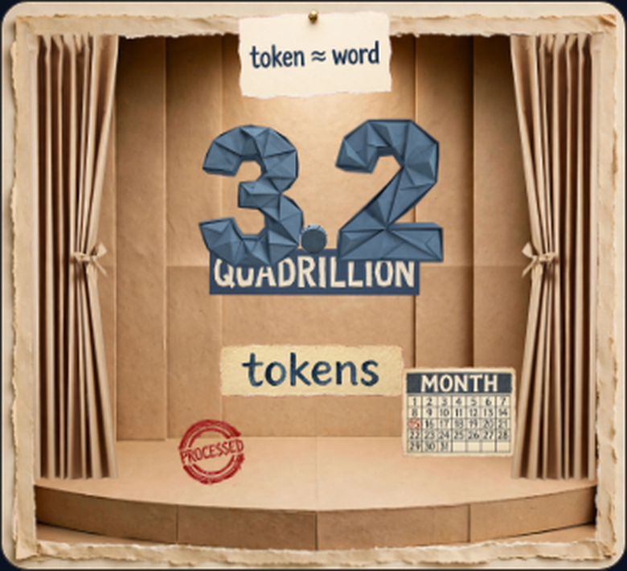
3.10 s — THE CALENDAR STANDS. The MONTH calendar stands on the platform, stage right, its base resting on the surface — a standing calendar, not a floating page.
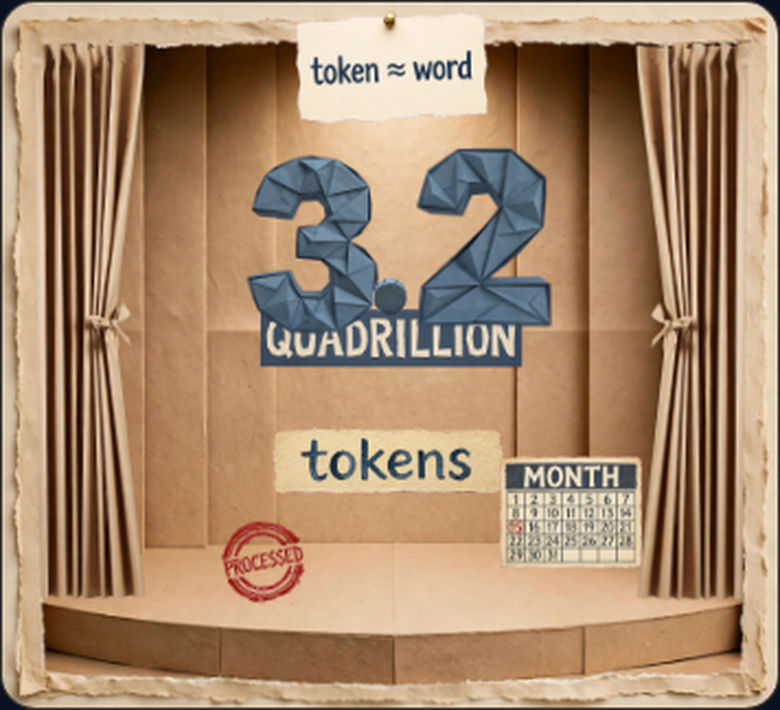
3.45 s — EVERY PROOF ON STAGE. Claim, tokens plaque, PROCESSED seal and the standing calendar, all in place at once.
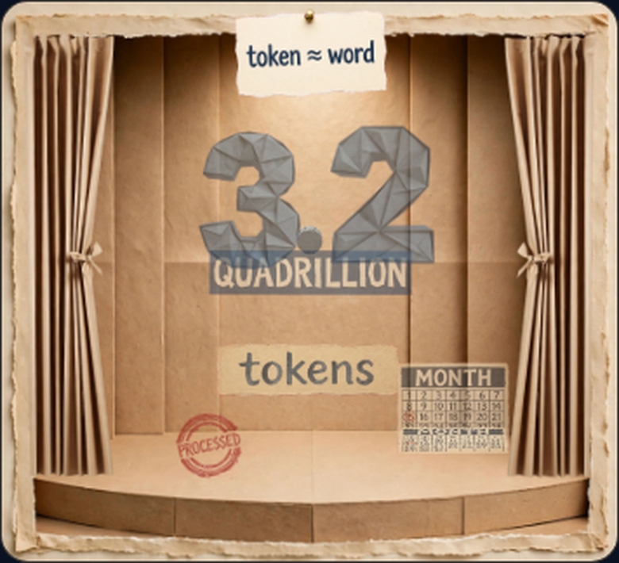
3.80 s — THE PAGE TURNS. The calendar's page flips back over its own base hinge. It stands throughout the turn.
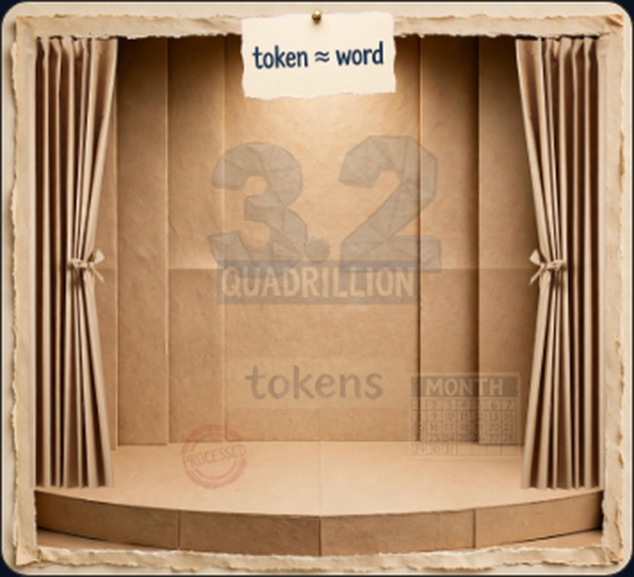
4.15 s — THE CLAIM FADES. The whole group fades together as the next beat of the film begins.
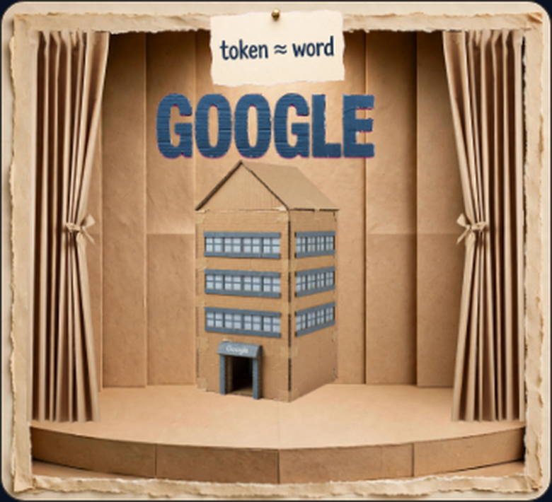
5.20 s — THE BUILDING. The Google building stands at full size on the platform — it appears at its seat and stays; it does not grow or rise. GOOGLE stands above it, clear of the roof. The roof is bare: the crate that was baked into the old artwork is gone — this is the clean replacement building, seated to the same height and centre.
WHAT CHANGED IN THIS PASS
The two side boxes were floating. Their seat numbers changed; they now stand on the platform.
The building floated, grew and rose on entry. It now appears at its final seat, at full size, and stays.
The calendar floated below the platform. It now stands on the stage for its whole moment.
The stamp appeared at the wrong times in the old frames. In the film it acts once, at its word “processed” — frame 2.45 s shows the moment.
The crate baked onto the building's roof is gone — the building artwork was replaced with a clean generation (the old written description itself prescribed a "small rooftop cube"; that clause has been removed from the record).
Closed since: the shard that crossed the left frame edge at 1.10–1.45 s — re-aimed to pour from the burst point itself; a full census of the burst (every 0.05 s) now shows no shard crossing any edge (D4).
What these are: frames captured from the actual film at phone size, after the fixes above. The previous slideshow was composed from plan numbers and has been withdrawn — every frame here is the film itself, and every element in it was approved where it stands.